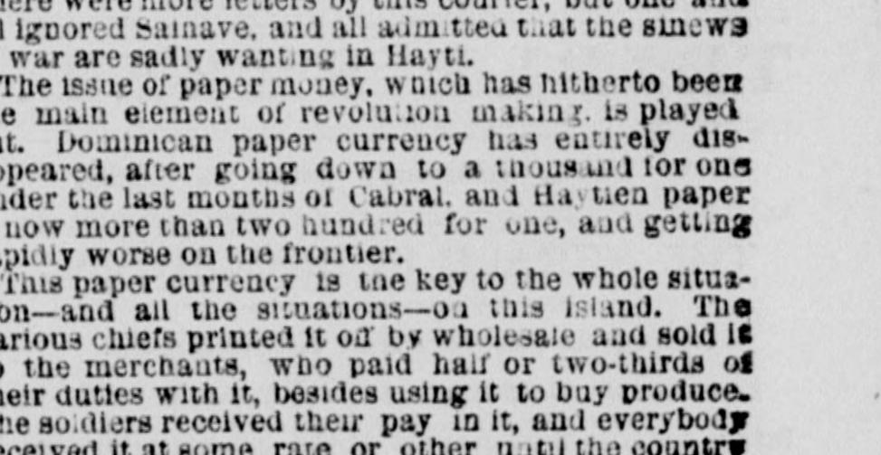
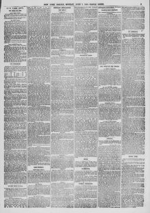

ST. DOMINGO. Condition of the Country—Disappearance of the Paper Currency—Manoeuvres of Cabral—The Annexation Question—Trade on the Rope.SANTO DOMINGO. Condición del país—Desaparición del papel moneda—Maniobras de Cabral—La cuestión de la anexión—El comercio en la cuerda.
The New York Herald. New York [N.Y.], June 7, 1869. Page 5. Also published as the New York Daily Herald. Published by James Gordon Bennett. A daily newspaper, 1840–1920.The New York Herald. New York [N.Y.], 7 de junio de 1869. Página 5. También publicado como New York Daily Herald. Publicado por James Gordon Bennett. Periódico diario, 1840–1920. View the originalVer el original


See the full pageVer la página completaThe newspaper reported that the Dominican Republic's paper currency was overprinted by various chiefs and ultimately repudiated, leaving the masses with a deep aversion to government money. An attempted revolution in January to redeem a currency issue with silver failed to attract even 200 people. Additionally, General Cabral entered the Dominican territory and remained in the border belt without advancing further or being driven out, with conflicting reports claiming minor skirmishes resulting in fewer than a dozen casualties on either side up to May 5.A partir del extracto, el periódico expuso que las sucesivas emisiones clandestinas de papel moneda por diversos caudillos terminaron por desacreditarlo y llevarlo al repudio general, dejando en las clases populares una profunda aversión hacia el dinero fiscal. Una tentativa insurreccional en enero para rescatar una emisión fiduciaria en plata no logró concitar la adhesión ni de 200 hombres. Asimismo, el general Cabral incursionó en territorio dominicano manteniéndose en la franja fronteriza sin conseguir avanzar más ni ser desalojado, con partes contradictorios que reportaban escaramuzas aisladas que no alcanzaban la docena de bajas en ningún bando hasta el 5 de mayo.
FULL TEXT:TEXTO COMPLETO:
ST. DOMINGO.SANTO DOMINGO.
Condition of the Country—Disappearance of the Paper Currency—Manoeuvres of Cabral—The Annexation Feeling—Trade with Europe.Estado del país—Desaparición del papel moneda—Maniobras de Cabral—El sentimiento anexionista—Comercio con Europa.
ST. DOMINGO, May 20, 1869.SANTO DOMINGO, 20 de mayo de 1869.
I complained in my last—of the 12th instant or thereabouts—that the rains were over due, but had not come. Since then they have been up to their duty. Nearly every day or night we have had at least one lively shower, and the crops and pastures are smiling gratefully in return. The roads will not improve as kindly as the vegetation, however, though a courier from the confines of Hayti, whom I caught on the wing, says they are in fine order from here to Azua. This courier brings letters worth reading, not from their intrinsic importance nor their literary value, but for their curiously confused statements. One minister writes that his "government" will unite with that of the Dominican republic in raising the flag of the United States if President Baez will share with his neighbor the loan he has lately obtained from England. Another of the ministers expresses his "loyal desire for a lasting peace with our Dominican brothers" but there can be no peace so long as the "evil disposed traitors of Santiago and Porto Plata are plotting to sell their country to the Yankees." So he proposes to use a just portion of the English loan to extinguish the Cabral-Cacos and establish a peaceful and united government over the whole island. These are not official letters—else I might have missed the pleasure of reading them—but the private communication of views to be acted upon in case the Dominican President should entertain them. The point of the joke is that "this government" was not yet in existence, but proposed to organize very soon—that is, early in May. The chiefs of this coming government had, it would seem, either failed to compare notes, or agreed to disagree. There were more letters by this courier, but one and all ignored Salnave, and all admitted that the sinews of war are sadly wanting in Hayti.Me quejé en mi última—del 12 del corriente o por ahí—de que las lluvias estaban atrasadas, pero no habían llegado. Desde entonces han cumplido con su deber. Casi cada día o noche hemos tenido al menos un vivo aguacero, y las cosechas y los pastos sonríen agradecidos en respuesta. Los caminos no mejorarán tan amablemente como la vegetación, sin embargo, aunque un correo procedente de los confines de Haití, a quien intercepté al vuelo, dice que están en buen estado desde aquí hasta Azua. Este correo trae cartas que vale la pena leer, no por su importancia intrínseca ni por su valor literario, sino por sus curiosamente confusas afirmaciones. Un ministro escribe que su «gobierno» se unirá al de la república dominicana para enarbolar la bandera de los Estados Unidos si el presidente Báez comparte con su vecino el empréstito que últimamente ha obtenido de Inglaterra. Otro de los ministros expresa su «leal deseo de una paz duradera con nuestros hermanos dominicanos», pero que no puede haber paz mientras los «traidores mal dispuestos de Santiago y Puerto Plata conspiren para vender su país a los yanquis». Así que propone usar una justa porción del empréstito inglés para extinguir a los Cabral-Cacos y establecer un gobierno pacífico y unido sobre toda la isla. Estas no son cartas oficiales—de lo contrario podría haberme perdido el placer de leerlas—sino la comunicación privada de opiniones para actuar en caso de que el Presidente dominicano las acepte. El punto de la broma es que «este gobierno» aún no existía, pero se proponía organizarse muy pronto—es decir, a principios de mayo. Los jefes de este gobierno venidero habían, al parecer, o bien dejado de comparar notas, o acordado discrepar. Hubo más cartas por este correo, pero todas ignoraron a Salnave, y todas admitieron que los nervios de la guerra escasean tristemente en Haití.
The issue of paper money, which has hitherto been the main element of revolution making, is played out. Dominican paper currency has entirely disappeared, after going down to a thousand for one under the last months of Cabral, and Haytien paper is now more than two hundred for one, and getting rapidly worse on the frontier.La emisión de papel moneda, que hasta ahora ha sido el elemento principal para hacer revoluciones, está agotada. El papel moneda dominicano ha desaparecido por completo, después de bajar a mil por uno bajo los últimos meses de Cabral, y el papel haitiano está ahora a más de doscientos por uno, y empeorando rápidamente en la frontera.
This paper currency is the key to the whole situation—and all the situations—on this island. The various chiefs printed it off by wholesale and sold it to the merchants, who paid half or two-thirds of their duties with it, besides using it to buy produce. The soldiers received their pay in it, and everybody received it at some rate or other until the country was so overflooded with it that the traders would not receive it at any price. For a time each successful chief would try the virtues of a special issue, to be taken in preference at the Custom Houses, but one and all were finally overdone and repudiated. Thus the masses—on whom the evils of depreciation always fell most severely—have conceived a deep rooted aversion to government currency. The promise to redeem with silver the Cabral issue was the staple of the Seybo attempt at revolution about the beginning of January, but even that bait did not bring out 200 people, and the affair was snuffed out in a week.Este papel moneda es la clave de toda la situación—y de todas las situaciones—en esta isla. Los diversos jefes lo imprimían al por mayor y lo vendían a los comerciantes, quienes pagaban la mitad o dos tercios de sus derechos con él, además de usarlo para comprar productos. Los soldados recibían su paga en él, y todo el mundo lo recibía a una tasa u otra hasta que el país quedó tan inundado de él que los comerciantes no lo recibían a ningún precio. Por un tiempo cada jefe victorioso probaba las virtudes de una emisión especial, para ser tomada con preferencia en las Aduanas, pero todas fueron finalmente exageradas y repudiadas. Así las masas—sobre quienes los males de la depreciación siempre cayeron con mayor severidad—han concebido una aversión profundamente arraigada hacia la moneda gubernamental. La promesa de redimir con plata la emisión de Cabral fue el cebo principal del intento de revolución de Seybo hacia principios de enero, pero ni siquiera ese cebo sacó a 200 personas, y el asunto fue sofocado en una semana.
General Cabral entered the Dominican territory nearly three months ago, and has been left in the possession of the depopulated border belt; but he neither gets further into the country nor is driven entirely out of it. Letters from both sides have quietly slipped into this city, each claiming to have had skirmishes (they call them battles), in which each asserts itself signally victorious; but the value of their victories may be estimated from this fact—not a dozen men have been killed or taken on either side up to May 3, the very last date of reliable accounts.El general Cabral entró en el territorio dominicano hace casi tres meses, y ha sido dejado en posesión de la despoblada franja fronteriza; pero ni avanza más hacia el interior del país ni es expulsado enteramente de él. Cartas de ambas partes se han deslizado calladamente hasta esta ciudad, afirmando cada una haber tenido escaramuzas (ellos las llaman batallas), en las cuales cada una se declara señaladamente victoriosa; pero el valor de sus victorias puede estimarse por este hecho—no han muerto ni han sido capturados ni una docena de hombres en ninguno de los dos lados hasta el 3 de mayo, la fecha misma más reciente de noticias fidedignas.
The news that Congress adjourned without inviting the Dominican republic to enter the Union was a great disappointment here. Any number of American flags had been found, or made, to be in readiness to flaunt on the arrival of the first United States ship-of-war. The people have so generally made up their minds to it that you will hear them talking of "our starry flag," "our beautiful money," and "our nice flour." United States quarters and dimes circulate largely in all the West India islands since the use of paper has made them scarce at home, and they are favorite "mediums"—they mean and make good their say.La noticia de que el Congreso levantó la sesión sin invitar a la república dominicana a entrar en la Unión fue una gran decepción aquí. Se había encontrado, o hecho, cualquier número de banderas estadounidenses, listas para ondear a la llegada del primer buque de guerra de los Estados Unidos. El pueblo se ha hecho tan generalmente a la idea que se le oirá hablar de «nuestra bandera estrellada», «nuestro hermoso dinero» y «nuestra buena harina». Las monedas estadounidenses de veinticinco y de diez centavos circulan ampliamente en todas las islas de las Indias Occidentales desde que el uso del papel las ha hecho escasas en casa, y son «medios» favoritos—significan y hacen buena su palabra.
Yesterday, the 19th, a schooner came in from Porto Rico overloaded with a live freight of Dominicans expelled from that Spanish colony by the orders of the home government. It was probably a necessary precaution, as not one of them could be trusted since the revolution in Cuba. Fifty-five—counting babies sixty—persons came over with their little all by this small craft, which they clubbed their meagre means to charter, and others are to follow as soon as they can find the means. They made a melancholy show, being mostly of the poorest class who had enlisted in the Spanish army during the period of occupation at St. Domingo. This arrival and the theatre are the chief excitements of the hour. I repeat that there is not, nor has there been, the least shade of public excitement here about the border movements. No one believes there will anything come of it, and if there should no one would care except the officials who are marched out.Ayer, el 19, entró una goleta procedente de Puerto Rico sobrecargada con una carga viva de dominicanos expulsados de esa colonia española por órdenes del gobierno metropolitano. Probablemente fue una precaución necesaria, pues ninguno de ellos era de fiar desde la revolución en Cuba. Cincuenta y cinco personas—sesenta contando a los bebés—vinieron con todo lo poco que tenían en esta pequeña embarcación, que reunieron sus escasos medios para fletar, y otros han de seguir tan pronto como encuentren los medios. Ofrecían un espectáculo melancólico, siendo en su mayoría de la clase más pobre que se había alistado en el ejército español durante el período de ocupación en Santo Domingo. Esta llegada y el teatro son las principales emociones del momento. Repito que no hay, ni ha habido, la menor sombra de excitación pública aquí acerca de los movimientos fronterizos. Nadie cree que algo saldrá de ello, y si saliera, a nadie le importaría excepto a los funcionarios a quienes se hace marchar.
Business is more animated with Europe, for 70,000 ceroons of superior tobacco are on the lists of sale and shipment, principally on German account, and none or next to none for the United States. All its value comes back in European goods. Even loaf sugar, which its nearer neighbors ought to supply, comes from France, and such articles as calicoes, sheetings and other cotton fabrics, are almost never seen here of United States manufacture. The only American cottons I have seen in the country were a few bales of sheetings, imported by Leyba & Co., and a bale of Merrimac calico, consigned to Read & Ricart, to try the market. While there are three vessels loading on the coast for England there is but one small craft taking in cargo for Boston. This is all wrong, for the United States ought to supply every yard of cotton goods used on this island, and would so do if affairs were rightly managed.Los negocios están más animados con Europa, pues 70,000 serones de tabaco superior están en las listas de venta y embarque, principalmente por cuenta alemana, y ninguno o casi ninguno para los Estados Unidos. Todo su valor regresa en mercancías europeas. Hasta el azúcar en panes, que sus vecinos más cercanos deberían suministrar, viene de Francia, y artículos tales como las telas estampadas, los lienzos y otras telas de algodón, casi nunca se ven aquí de fabricación estadounidense. Los únicos algodones estadounidenses que he visto en el país fueron unas pocas balas de lienzos, importadas por Leyba & Co., y una bala de percal Merrimac, consignada a Read & Ricart, para probar el mercado. Mientras hay tres buques cargando en la costa para Inglaterra, solo hay una pequeña embarcación tomando carga para Boston. Todo esto está mal, pues los Estados Unidos deberían suministrar cada yarda de géneros de algodón usados en esta isla, y así lo harían si los asuntos se manejaran correctamente.
The news from the north side shows the tobacco crop to be larger than any previous year. It is estimated that not less than 120,000 ceroons of tobacco will be exported from Porto Plata this season.Las noticias del lado norte muestran que la cosecha de tabaco es mayor que la de cualquier año anterior. Se estima que no menos de 120,000 serones de tabaco serán exportados desde Puerto Plata esta temporada.
Professor Gabb, State geologist, goes to New York by this steamer. The Professor is very reticent as to the result of his preliminary labors, but there is a certain twinkle in his eye that betokens inward satisfaction.El profesor Gabb, geólogo del Estado, va a Nueva York en este vapor. El Profesor es muy reservado en cuanto al resultado de sus labores preliminares, pero hay un cierto brillo en sus ojos que denota satisfacción interior.
This collection gathers the coverage of the Dominican Republic in the American press, in the order it was published.Esta colección reúne la cobertura de la República Dominicana en la prensa estadounidense, en el orden en que se publicaron.